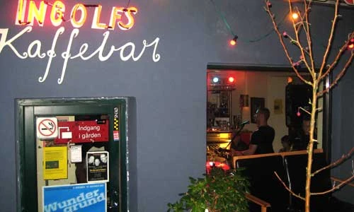
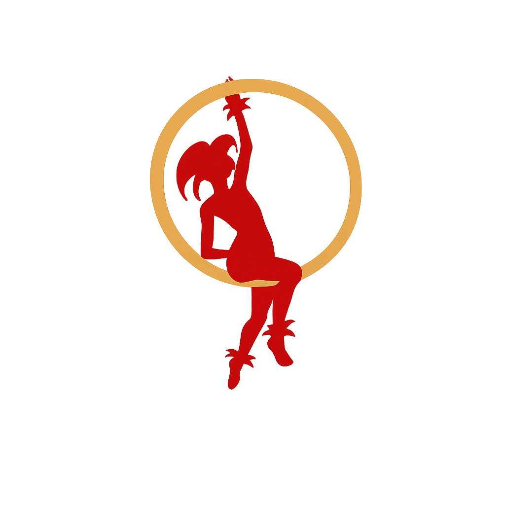

Velkommen til Ingolfs
vi glæder os til at byde dig velkommen.
Vi serverer morgenmad, frokost og aftensmad alle ugens dage (søndage lukker vi dog klokken 16.00), og i weekenden har vi byens bedste brunch. Alt er hjemmelavet, lige fra vores surdejsboller til de friske sommerurter og dejlige dressinger. Du kan tro, det hele er lækkert og dufter skønt.
Du kan booke bord til spisning lige her - ellers dukker du bare op, og så kan vi helt sikkert finde en plads et sted. Skal du bare have lidt at drikke, behøver du ikke bestille. Vores hyggelige gårdhave har altid et hav af pladser, og når der er koldt udenfor, har vi selvfølgelig varmelamper og et tæppe, du kan svøbe dig ind i.
Ingolfs - stedet med de store ambitioner og armbevægelser. Her er plads til alle, og det har der været siden 1999, hvor vi slog dørene op første gang. Vi byder jævnligt velkommen til skønne intimkoncerter på vores lille scene, og du kan altid finde dagens friske avis, hyggelige bøger og gode spil.
Vi er stolte af vores køkken. Vi laver nemlig det hele fra bunden selv, og vi skifter menuen jævnligt, så vi altid har sæsonens råvarer i fokus - se menuen her. I vinkøleskabet finder du både de særlige vine fra øverste hylde og de dejlige hverdagsvine. Vi har øl på både flaske og fad, og vi har lækre safter og hjemmelavet limonade - kom og få et glas.
“Bare det sædvanlige” hører vi flere gange dagligt, for vi har nemlig mange stamkunder, og det elsker vi! Skal du ikke også være en af dem? Det, synes vi, kunne være så hyggeligt.

